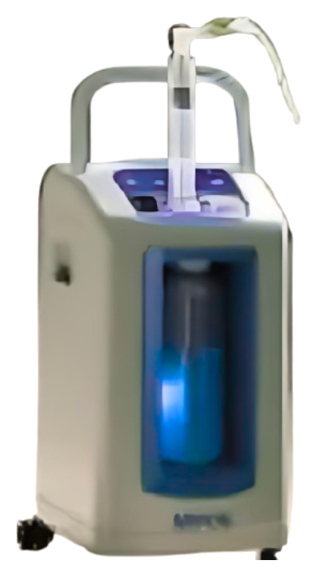
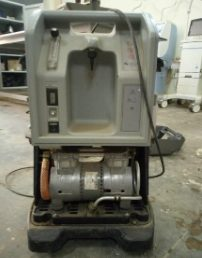
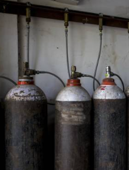
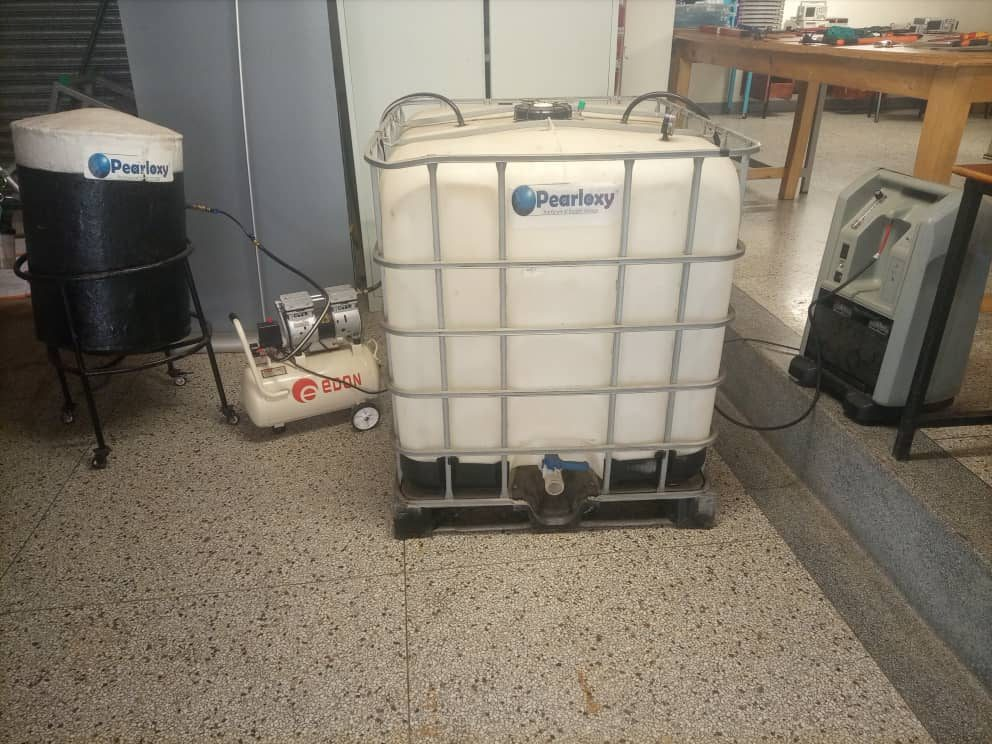
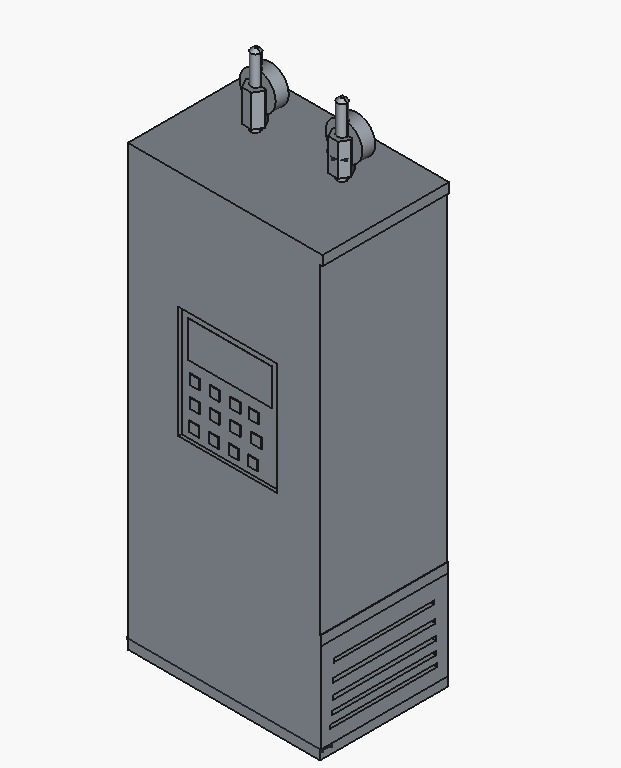
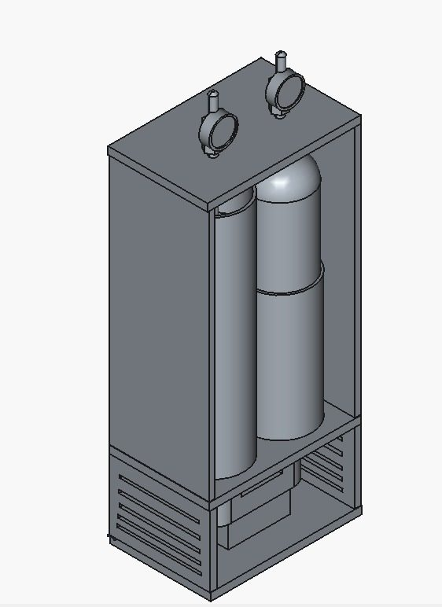
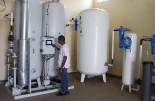

MPOS — the portable oxygen safety net for any hospital
Mobile Portable Oxygen Storage. An uninterruptible oxygen supply system that stores oxygen while power is available and delivers it when power fails.
Patent Pending • Built in Uganda • One-Time Purchase

A concentrator is only as reliable as its power supply
Oxygen concentrators made medical oxygen far more accessible in low-resource healthcare. They also tied it to the electricity grid.
When electricity goes out in a healthcare facility using oxygen concentrators, oxygen flow can stop. Clinical staff are left to improvise a backup at the worst possible moment, for the patients least able to tolerate an interruption.
The existing answers each carry a cost. Cylinders bring recurring refill expenses and are less convenient for continuous backup. Oxygen plants bring higher operating expenses and infrastructure requirements that most facilities cannot meet.


How MPOS works
Five stages. The system stores oxygen when electricity is available and provides stored oxygen when the main power supply is interrupted.
Oxygen Source
MPOS draws from the oxygen concentrator the facility already operates.
Compressor
The compressor raises pressure so oxygen can be stored in a practical volume.
Reservoir / Storage Tank
Oxygen accumulates in the reservoir for as long as power is available.
Pressure Regulation
Stored oxygen is regulated down to a usable delivery pressure.
Patient Delivery
Oxygen is delivered to up to three patients at the point of care.
Power available
The concentrator supplies patients as normal. In parallel, MPOS compresses and stores oxygen in its reservoir, building the buffer.
Power interrupted
MPOS automatically provides the stored oxygen. Delivery continues to up to three patients for up to two hours, with no manual switchover required.

PearlOxy on YouTube. Playing loads content from YouTube.
Five things MPOS is built to be
Plug & Play
Easy to deploy. MPOS is designed to sit alongside existing oxygen concentrators rather than require a new installation.
Reliable
Continues supplying oxygen during power cuts, drawing on the reserve it built while power was available.
Safe
Provides critical oxygen backup for the patients who depend on continuous oxygen therapy.
Cost-Effective
A one-time purchase model rather than recurring oxygen-cylinder refill costs.
Portable
Designed for low-resource healthcare settings, and to be moved to where the need is.
Patent Pending
A utility patent application was submitted in 2024. The system is currently patent pending.
Specifications
The figures below are taken directly from the PearlOxy pitch deck. Specifications not stated in the company material are not listed here.
| Capacity | 2,000 |
|---|---|
| Simultaneous patients | Up to 3 |
| Backup duration | Up to 2 hours |
| Deployment | Alongside existing oxygen concentrators |
| Switchover | Automatic on power interruption |
| Mobility | Portable |
| IP status | Patent pending |
A note on the capacity figure
The pitch deck states a capacity of 2,000 without specifying a unit. It is reproduced here exactly as supplied rather than interpreted.


What one unit is designed to do
Patients supplied simultaneously, up to
Backup operation per power interruption, up to
Litres/minute of oxygen stored and delivered annually, per unit
Pitch deck projectionChildren's lives the deck describes one unit as supporting annually
Pitch deck projectionHow to read these figures
The annual oxygen volume and the figure of 224 children are company-provided impact projections from the PearlOxy pitch deck. They are not independently verified medical evidence, and they have not been validated in clinical trials. Clinical trials to validate MPOS performance in real-world patient settings are planned.
MPOS against existing oxygen backup options
PearlOxy's stated comparison with the two alternatives hospitals most commonly weigh.
MPOS Device
Oxygen buffer for concentrators
- Portable
- Cost-effective
- One-time purchase
- No cylinder refill costs
- Designed for low-resource settings
- Oxygen backup during power cuts
Oxygen Cylinders
Conventional backup supply
- Recurring refill costs
- Less convenient for continuous backup
Oxygen Plants
On-site generation at scale
- Higher operating expenses
- Infrastructure requirements

About this comparison
These points are PearlOxy's own stated comparison as presented in the company pitch deck. They are not the result of an independent head-to-head evaluation.
Where MPOS can be deployed
Any setting where oxygen therapy is delivered and the power supply cannot be taken for granted.
Hospitals
Wards and units where patients are on continuous oxygen therapy.
Public health facilities
Government facilities serving the largest share of patients.
Private clinics
Smaller facilities without the budget for an oxygen plant.
Low-resource facilities
The setting MPOS was specifically designed around.
Emergency care
Environments where interruption tolerance is lowest.
Unreliable electricity
Facilities where power interruptions are a routine operating condition.
One purchase, no refill contract
PearlOxy sells MPOS units directly to healthcare organisations as an off-the-shelf product.
The unit economics below are the figures stated in the company pitch deck. There is no recurring oxygen-cylinder refill cost attached to the product.
| Selling price per unit | $2,000 |
|---|---|
| Manufacturing cost per unit | $1,300 |
| Gross profit per unit | $700 |
| Gross margin | 35% |
| Revenue model | Direct off-the-shelf product sales |
Frequently asked
No. MPOS is designed to work alongside oxygen concentrators as a buffer. The concentrator remains the oxygen source; MPOS stores what it produces and releases that reserve when power is interrupted.
Up to three patients simultaneously, for up to two hours of backup operation, as stated in the company pitch deck.
MPOS uses a one-time purchase model rather than recurring oxygen-cylinder refill costs. The stated price is $2,000 per unit.
Not yet. A prototype was built and tested in 2022, and clinical trials to validate MPOS performance in real-world patient settings are planned for 2026. PearlOxy is also working toward CE Mark, UNBS and NDA approval.
A utility patent application was submitted in 2024. The system is currently patent pending.
Pilot deployments in Ugandan hospitals are part of the planned use of the current funding round. Get in touch about a hospital pilot and the team will follow up.
Run a hospital pilot
If you manage a facility where power interruptions put oxygen therapy at risk, we want to hear from you. Pilot deployments in Ugandan hospitals are a funded priority for the next 18 months.
Distribute or partner
PearlOxy works with government, NGOs, international aid organisations, private healthcare providers and local and regional distributors to expand access.